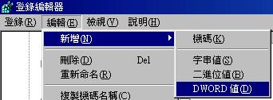
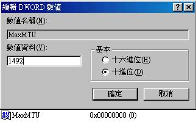
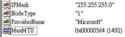
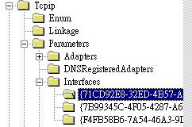

| |
最近更新日期：2003/09/19
|
Linux 的网络功能相当的强悍，一时之间我们也无法完全的介绍所有的网络指令，这个章节主要的目的在介绍一些常见的网络指令而已。至于每个指令的详细用途将在后续
服务器架设时，依照指令的相关性来进行说明。当然，在这个章节的主要目的是在于将所有的指令汇整在一起，比较容易了解啦！
|
网络参数设定指令：
ifconfig,
ifup,
ifdown,
route,
一些网络侦错指令：
ping,
traceroute,
网络观察与查询：
netstat,
host,
nslookup,
远程联机使用指令：
telnet,
ftp,
ncftp,
文字界面网页浏览：
lynx,
wget,
终端机的中文显示：
jmcce
计划
连不上一些网站的处理方法
MTU 修改
课后练习：
参考数据
 网络参数设定指令 网络参数设定指令
要连上 Internet ，那么 Linux 就得要好好的仔细的设定啰！我们这里就先介绍几个重要的网络参数设定指令：
ifconfig
：设定网络参数使用的指令
ifup,ifdown：启动与关闭某个网络适配器
route
：显示/修改路由表( route table )
ifconfig
设定网络参数使用的指令
语法：
[root@test
test]# ifconfig interface
[root@test
test]# ifconfig interface [options]
参数说明：
interface ：网络适配器代号，例如
eth0, eth1...
options
：主要有以下几个参数
network
：网段
broadcast
：广播网段
netmask
：子网掩码
up|down
：启动|关闭网络接口
范例：
[root@test
root]# ifconfig
# 这个指令在没有加上网络卡时，会将所有的网络接口内容显示出来
eth0
Link encap:Ethernet HWaddr 00:50:FC:22:9C:57
inet addr:192.168.1.2 Bcast:192.168.1.255 Mask:255.255.255.0
UP BROADCAST RUNNING MULTICAST MTU:1500 Metric:1
RX packets:5793395 errors:0 dropped:0 overruns:0 frame:0
TX packets:6032143 errors:0 dropped:0 overruns:0 carrier:0
collisions:983 txqueuelen:100
RX bytes:534796148 (510.0 Mb) TX bytes:2607882970 (2487.0 Mb)
Interrupt:10 Base address:0x6100
lo
Link encap:Local Loopback
inet addr:127.0.0.1 Mask:255.0.0.0
UP LOOPBACK RUNNING MTU:16436 Metric:1
RX packets:3258 errors:0 dropped:0 overruns:0 frame:0
TX packets:3258 errors:0 dropped:0 overruns:0 carrier:0
collisions:0 txqueuelen:0
RX bytes:170063 (166.0 Kb) TX bytes:170063 (166.0 Kb)
[root@test
root]# ifconfig eth0 192.168.0.2 netmask 255.255.255.0
\
>
broadcast 192.168.0.255
上面再将 eth0
这个网络接口的 IP 属性修改为 192.168.0.2 这个 IP ，广播地址也跟着改变了！
[root@test
root]# ifconfig eth0
# 将修改完的咚咚显示出来一下！
eth0
Link encap:Ethernet HWaddr 00:50:FC:22:9C:57
inet addr:192.168.0.2 Bcast:192.168.0.255 Mask:255.255.255.0
UP BROADCAST RUNNING MULTICAST MTU:1500 Metric:1
RX packets:5793395 errors:0 dropped:0 overruns:0 frame:0
TX packets:6032143 errors:0 dropped:0 overruns:0 carrier:0
collisions:983 txqueuelen:100
RX bytes:534796148 (510.0 Mb) TX bytes:2607882970 (2487.0 Mb)
Interrupt:10 Base address:0x6100
[root@test
root]# ifconfig eth0 down
<==关闭 eth0 网络卡
[root@test
root]# ifconfig eth0 up <==启动
eth0 网络卡！ |
说明：
ifconfig 这个东西也很好玩！尤其是您在您的网络卡尚未设定完成的时候，而且确定网络卡已经成功的驱动了之后，可以使用这个指令来驱动您的网络卡呦！另外，他的最大用处其实是来自于可以查看您的网络适配器的参数啦！所以最常使用的就是直接输入『
ifconfig 』或者是『 ifconfig eth0 』或者是『 ifconfig ppp0 』等等的用法！倒是不建议直接用来修改您的网络卡啦！不过，如果确定要使用
ifconfig 来修改您的网络适配器，那么可以参考上面的例子来修改呦！同时， ifconfig
也是用来做成『多 IP 』的主要指令呢！好了，我们来谈一谈上面几个简单的项目内容吧！
-
eth0 ：表示为网络卡的代号；
-
lo ：表示为『内部循环
IP 』的网络卡代号，请注意，这个内部的 interface 一定要存在！千万不要关掉他！
-
HWaddr ：是网络卡的硬件地址，就是我们在网络基础提到的
MAC
啦！
-
inet addr ：就是网络卡的
IP；
-
Bcast ：是广播(
broadcast ) 的地址；
-
Mask ：就是子网掩码啦；
-
MTU ：是 Maximum
Trasmission Unit 最大传输单元(字节)， 即此接口一次所能传输的最大封包，这个数值并非越大越好，也非越小越好，不过，设定错误时，可能会让您的网络无法连接上某些网站呢！请参考本章后续的
MTU 说明。
-
RX ：网络由启动到目前为止的接收情形；
-
TX ：网络由启动到目前为止的传送情形；
-
collisions ：网络讯号碰撞的情况说明；
-
txqueuelen ：是传输缓冲区长度大小意思；
-
Interrupt ：是
IRQ 中断地址；
-
Base address ：是
I/O 地址。这个 IRQ 与 I/O 在网络卡上面是可以设定的！设定的地方可以在 /etc/lilo.conf
里头来设定呢！如果您的主机上面有多张网络卡的时候，就用的着他了！可以避开问题呦！
总而言之， ifconfig 也是一个很好用的指令啦！但是有一点必须要清楚的，那就是
ifconfig eth0 up 或者是 ifconfig eth0 down 可以使用 ifup eth0 或 ifdown
eth0 来替代！不过有一点必须要先说明的，那就是 ifup 与 ifdown 是以 /etc/sysconfig/network-scripts/ifcfg-ethn
的档案来进行启动的！所以 ifcfg-eth0 必须存在才能使用 ifup ！OK！底下马上来说说
ifup, ifdown。
ifup,
ifdown
启动与关闭某个网络适配器
语法：
[root@test
root]# ifup [interface]
[root@test
root]# ifdown [interface]
参数说明：
范例：
[root@test
root]# ifup eth0
<==启动 eth0 这块网络卡！
[root@test
root]# ifdown eth0<==关闭
eth0 这块网络卡 |
说明：
手动修改网络参数使用 ifconfig ，但是档案设定的启动与关闭就得使用 ifup
与 ifdown 啰。这两个指令要比 ifconfig 简单的多！不过他却必须要有相关的档案存在才能启动呦！举个例子来说，上面我们要启动
eth0 这块网络卡的时候，那么您的 Linux 系统当中就必须要存在 /etc/sysconfig/network-scripts/ifcfg-eth0
这个网络适配器的配置文件案才行！同理可证！如果要启动 eth1 ，除了存在 eth1
这个实体网络卡之外，还要存在 ifcfg-eth1 才行！请确实了解呦！因为后面关于
Linux Router 的章节当中，我们提到的一张网卡多 IP 就是用这个观念来达成的！
route
显示/修改路由表( route table
)
语法：
[root@test
root]# route [-nee]
[root@test
root]# route add [-net|-host] 目标主机或网域
[netmask] [gw|dev]
[root@test
root]# route del [-net|-host] 目标主机或网域
[netmask] [gw|dev]
参数说明：
-n ：列出的信息以
IP 来显示
-ee ：列出较长列的信息
add ：增加路由信息
del ：删除一个路由信息
-net ：增加一个『网域』的路由，例如
C Class 的网域！
-host ：增加到某个
IP 主机的路由！
netmask ：就是
netmask 呀！
gw ：这个是路由的通讯闸！
gw 是以 IP 来建置的
dev ：这个是路由的通讯闸！
dev 是以 界面 ( internet ) 代号来建置的！
范例：
[root@test
root]# route<==看路由的信息！
Kernel IP routing
table
Destination
Gateway Genmask
Flags Metric Ref Use Iface
140.116.141.253
*
255.255.255.255 UH 0 0
0 ppp0
192.168.1.0
*
255.255.255.0 U 0
0 0 eth0
127.0.0.0
*
255.0.0.0 U
0 0 0 lo
default
140.116.141.253 0.0.0.0
UG 0 0
0 ppp0
[root@test
root]# route -n
<==以 IP 的方式来显示路由！
Kernel IP routing
table
Destination
Gateway Genmask
Flags Metric Ref Use Iface
140.116.141.253
0.0.0.0 255.255.255.255
UH 0 0
0 ppp0
192.168.1.0
0.0.0.0 255.255.255.0
U 0 0
0 eth0
127.0.0.0
0.0.0.0 255.0.0.0
U 0 0
0 lo
0.0.0.0
140.116.141.253 0.0.0.0
UG 0 0
0 ppp0
注意到 route,
route -n 这两个范例喔！使用 -n 与否会使 domain 是否进行查询，
一般来说，我都喜欢加上
-n 的，因为不必去查询正反解，显示速度较快，
此外， default
gateway 就是 0.0.0.0 喔！
[root@test
root]# route add -net 192.168.0.0 netmask
255.255.255.0 dev eth0
# 新增一个路由规则！
[root@test
root]# route del -net 192.168.0.0 netmask
255.255.255.0 dev eth0
# 删除一个路由啰
[root@test
root]# route add default gw 192.168.1.2
# 增加一个
default gateway 呢！
注意一下，
gw 后面接的是 IP ，而 dev 后面接的则是装置代号喔！ |
说明：
这个指令相当的有用！尤其是新手们最容易犯错的 gateway 设定错误的问题，都可以藉由这一个指令来检查呢！这个指令有两个主要的用途：
-
显示目前主机上面的路由信息；
-
修改( 增加或删除 )主机上面的路由表！『可以建置 router
呦！』
我们来谈一谈使用 route 时，显示的内容意义：
-
Destination：目标，可以是
IP 也可以是网域！至于没有规定到的，则是以 default 来表示！以上面为例，当我的机器要去
192.168.1.0 的时候，则以上表的 192.168.1.0 那一行的设定为主，但如果我要去
tw.yahoo.com 的时候，由于没有规定到！所以就要以 default 的信息为主要的路由！因此，我就会经由
140.116.141.253 这个 gateway 来传送出去我的封包啰！
-
Gateway ：该目标要经由哪一个网关传送？就是这一个设定值啦！
-
Genmask ：就是该
Destination 的 netmask 啰！例如 140.116.141.253 为 255.255.255.255 ，因为他是一个
host 而不是一个 network 呀！至于 192.168.1.0 就是 255.255.255.0 这个 C
Class 啰！那如果是 default 的话，就显示 0.0.0.0 ，也就是不论是哪里，都出自这一个
gateway 就是了！
-
Flages ：旗标，有底下几种
Flage 呢：
-
U (route is up)：该路由已经启动了；
-
H (target is a host)：目标是一个主机( IP )，例如上面范例中的
140.116.141.253 那一个；
-
G (use gateway)：用来作为 gateway 的设定；
-
R (reinstate route for dynamic routing)：使用动态路由时，恢复路由信息的旗标；
-
D (dynamically installed by daemon or redirect)：已经由服务或转
port 功能设定为 动态路由；
-
M (modified from routing daemon or redirect)：路由已经被修改了；
-
! (reject route)：这个路由将不会被接受(用来抵挡不安全的网域！)
-
Iface ：该设定使用的网络接口为何？
好了，那么如何增加或删除路由呢！就由上面的例子就可以知道啦！很简单的啦！不过需要注意的是，单纯有路由功能还不够！因为还需要有
router
的功能才行！我们将在
router 那个章节再来持续谈一谈这个问题啰！『注：当您发现下达
route 的时候，显示的速度很慢时，通常是您的路由信息有一定的问题存在！果真如此的话，请务必仔细的检查一下设定，否则对于您的网络速度会有迟滞现象呦！』
一些网络侦错指令
在网络的世界中，最常听到的一句话就是：『高手求救！我的
Linux 不能上网络！』我的天吶！不能上网络的原因多的很！而要完全搞懂也不是一件简单的事情呢！而很多的网络侦测指令其实在
Linux 里头已经都预设存在了，只要您好好的学一学基本的侦测指令，那么一些朋友在告诉您如何侦错的时候，您应该就立刻可以知道如何来搞定他啰！好了，底下我们就简单的来谈一谈几个很基本的网络常用的侦错指令啦！要好好学习呦！
ping
：送一个 ICMP 的封包给某部主机
traceroute ：调查连接到某部主机时，每个节点的连接速度
底下分别来谈一谈先！
ping
传送一个 ICMP 封包给某部主机
语法：
[test@test
test]# ping [-b broadcast]
[test@test
test]# ping [-c number] host
参数说明：
-b broadcast
：当要 ping 一个网段时，可以使用这个方式来『广播』！
-c number
：后面加上 number (数字)可以限制 ping 几次！
范例：
[test@test
test]# ping -c 5 tw.yahoo.com
<==除了IP也可以 ping domain name！
PING tw.yahoo.com
(202.1.237.21) from 61.28.113.1 : 56(84) bytes of data.
64 bytes from
tw.yahoo.com (202.1.237.21): icmp_seq=0 ttl=245 time=7.133 msec
64 bytes from
tw.yahoo.com (202.1.237.21): icmp_seq=1 ttl=245 time=7.497 msec
64 bytes from
tw.yahoo.com (202.1.237.21): icmp_seq=2 ttl=245 time=6.625 msec
64 bytes from
tw.yahoo.com (202.1.237.21): icmp_seq=3 ttl=245 time=6.457 msec
64 bytes from
tw.yahoo.com (202.1.237.21): icmp_seq=4 ttl=245 time=6.434 msec
--- tw.yahoo.com
ping statistics ---
5 packets transmitted,
5 packets received, 0% packet loss
round-trip
min/avg/max/mdev = 6.434/6.829/7.497/0.421 ms
[test@test
test]# ping -b 192.168.1.255 -c 2 <==这里必须是广播地址
WARNING: pinging
broadcast address
PING 192.168.1.255
(192.168.1.255) from 192.168.1.254 : 56(84) bytes of data.
64 bytes from
192.168.1.36: icmp_seq=0 ttl=255 time=191 usec
64 bytes from
192.168.1.45: icmp_seq=0 ttl=255 time=492 usec (DUP!)
64 bytes from
192.168.1.254: icmp_seq=0 ttl=255 time=531 usec (DUP!)
--- 140.116.44.255
ping statistics ---
2 packets transmitted,
2 packets received, +6 duplicates, 0% packet loss
round-trip
min/avg/max/mdev = 0.134/0.811/2.094/0.647 ms |
说明：
这个东西好用的很！不论在哪一个操作系统当中，他都是相当有用的网络侦错指令！例如您要侦测一下您的网络卡是否正确的备执行了，可以使用『ping
your.NIC.IP.address 』来查阅！当然啰！加上次数更好：『ping
-c 5 your.NIC.IP.address 』！无论如何，这个指令一定要记得的啦！
-
icmp：指的是 ICMP
这个协定啰！
-
ttl：指的是 time
to live 啦！当经过一个节点， ttl 就会减少一！而预设有 255 个！以上面为例，我的
Linux 主机连接到 tw.yahoo.com 共经过 10 个 gateway ，所以 ttl 剩下 245
！
traceroute
调查连接到某部主机时，每个节点的连接速度
语法：
[root@test
root]# traceroute [-i interface] [-g gateway]
[host|IP]
参数说明：
-i ：使用这个
interface 来连出去！例如 eth0, ppp0 等！
-g ：使用这个
gateway 来连出去！例如 192.168.1.2, 140.116.141.29 等！
范例：
[root@test
root]# traceroute tw.yahoo.com
traceroute
to tw.yahoo.com (202.1.237.21), 30 hops max, 38 byte packets
1
140.116.141.253 (140.116.141.253) 123.958 ms 96.357 ms
97.810 ms
2
140.116.140.253 (140.116.140.253) 103.548 ms 87.607 ms
78.227 ms
3
163.28.112.253 (163.28.112.253) 99.522 ms 84.379 ms 79.858
ms
4
210.242.251.246 (210.242.251.246) 104.429 ms 86.622 ms
79.857 ms
5
211.22.226.50 (211.22.226.50) 97.897 ms 86.031 ms 87.177
ms
6
TaiPei-TANET-P1.BR.HiNet.NET (168.95.207.242) 101.981 ms 58.149
ms 60.231 ms
7
168.95.17.162 (168.95.17.162) 69.198 ms 63.294 ms 58.594
ms
8
210.65.200.10 (210.65.200.10) 65.950 ms 67.336 ms 63.503
ms
9
211.22.35.169 (211.22.35.169) 67.572 ms 92.535 ms 83.105
ms
10 211.22.41.89
(211.22.41.89) 106.855 ms 92.540 ms 87.201 ms
11 alteon6.tpe.yahoo.com
(202.1.237.253) 122.347 ms 92.235 ms 91.266 ms |
说明：
这个指令相当的有用途，他可以用来判断当一部远程主机无法联机时候，到底封包是停顿在哪一个节点上！因为很多时候，您常常会发现『咦！网络速度怎
么变慢了？』然后自己的主机似乎没有问题呀！这个时候就可以使用这个指令查检查一下，是否在联机的过程当中，有些节点被挡下来了呢？！很好用的啦！不过，
万一如果出现了
*** 在 traceroute 的输出结果中，那就表示该 router 应该有点问题吶！得赶紧向上头报告去维修喔！
网络观察与查询
在我们主机上面，您可晓得目前有多少联机被建立了？而您的主机名是否能够在
Internet 上面被查询到呢？这些都需要动用到某些网络观察的指令。我们底下就谈一谈几个简单的观察指令：
netstat
：查阅网络信息的指令
host
：显示主机名( domain name )
nslookup
：调查主机名对应的 IP ！
netstat
查阅网络信息的指令
语法：
[root@test
root]# netstat [-r] [-i interface]
[root@test
root]# netstat [-antulp]
参数说明：
-r ：显示出
route 的意思；
-i ：显示出
interface 的内容，跟 ifconfig 类似啦！
-a ：显示出目前所有的网络联机状态！
-n ：默认情况中，显示出的
host 会以 host name 来显现，若为 n 则可以使 port 与 host 都以数字显示
-t ：仅显示
tcp 封包的联机行为
-u ：仅显示
udp 的封包联机状态
-l ：仅显示
LISTEN 的内容
-p ：同时显示此一联机的
PID 喔！(注意：只有 root 才能行使此功能！)
范例：
[root@test
root]# netstat -r
# 嘿嘿！显示出目前的路由表！与
route
指令的功能相同。
Kernel IP routing
table
Destination
Gateway Genmask
Flags MSS Window irtt Iface
140.116.141.253
*
255.255.255.255 UH 40 0
0 ppp0
192.168.1.0
*
255.255.255.0 U 40 0
0 eth0
192.168.0.0
*
255.255.255.0 U 40 0
0 eth0
127.0.0.0
*
255.0.0.0 U
40 0 0 lo
default
140.116.141.253 0.0.0.0
UG 40 0
0 ppp0
[root@test
root]# netstat -i eth0
# 看看底下显示出的内容，是否跟
ifconfig eth0 类似呀！？
Kernel Interface
table
Iface
MTU Met RX-OK RX-ERR RX-DRP RX-OVR TX-OK TX-ERR
TX-DRP TX-OVR Flg
eth0
1500 077199373 0
0 169616342
0 0 0 BMRU
lo
16436 0 1130485 0
0 0 1130485
0 0 0 LRU
[root@test
root]# netstat -an<==显示所有的联机状态，并且以数字型态显示
[root@test
root]# netstat -tul
<==显示 LISTEN 的及 tcp 与 udp 的联机状态，如下：
Active Internet
connections (only servers)
Proto Recv-Q
Send-Q Local Address
Foreign Address State
tcp
0
0
*:mysql
*:*
LISTEN
tcp
0 0 *:netbios-ssn
*:*
LISTEN
tcp
0
0
*:pop3
*:*
LISTEN
tcp
0
0
*:http
*:*
LISTEN
tcp
0
0
*:ftp
*:*
LISTEN
tcp
0
0
*:ssh
*:*
LISTEN
tcp
0
0
*:smtp
*:*
LISTEN
udp
0 0 *:netbios-ns
*:*
注意：上面的
LISTEN 表示该 port 是已经在 监听 网络服务啦！而左边的 tcp 指的是 tcp 封包！
[root@test
root]# netstat -anp | more
<==这个指令很常下达！请记得呦！ |
说明：
netstat 可是很了不起的指令，一定要学会的！尤其他可以让我们了解目前的您的主机的联机状态！与开启的
port 有哪些！所以一定得学会才行呀！如果您分别下达：
-
netstat -a | more
-
netstat -an | more
一定会发现有点奇怪？怎么有的 port 会以服务名称(例如上面例子里的 pop3
...)有的会以 port 号码来显示呢！？嘿嘿！那就是 /etc/services
以及 -n 这个参数的用途啦！您可以发现的是，如果 netstat -a 时，显示出来的
port 号码在 /etc/services 存在对应的服务名称的时候，那么默认他就会显示出该服务名称啦！但是若在
/etc/services 找不到档案的话，那么自然就还是以 port 号码来显示的！那么加上了
-n 参数后，不论如何，他都会以 port 及 IP 来显示啦！
另外，那个 -p 也很有用呦！尤其是在一些莫名其妙的联机出现时，可以用
-p 这个参数查到 PID ，然后再以利用 kill
来杀掉他呦！
-
Proto：指的是封包或者是通讯协议啦！ tcp ,
udp 是常见的呦！
-
Local Address：本地端的 IP 与 Port 号，如果
/etc/services 存在对应服务名称，就以服务名称显示；
-
Foreign Address ：监听哪一个地区与 port ；
-
state：状态栏就很多啦！基本的有：
-
LISTEN ：亦即监听状态中的 port ！
-
ESTABLISHED：已建立联机的联机情况
-
TIME_WAIT：该联机在目前已经是等待的状态了！随时有可能会断线呦！
善用 netstat 可以查得相当多的网络信息！尤其在关闭本机的 port 时！
host
显示主机名( domain name
)
语法：
[root@test
root]# host [-a] domain_name
参数说明：
-a ：显示出所有的信息
范例：
[root@test
root]# host tw.yahoo.com <==仅显示出主机的
IP
tw.yahoo.com.
has address 202.1.237.21
[root@test
root]# host -a tw.yahoo.com <==所有的主机信息显示！
Trying "tw.yahoo.com."
;; ->>HEADER<<-
opcode: QUERY, status: NOERROR, id: 59138
;; flags: qr
rd ra; QUERY: 1, ANSWER: 1, AUTHORITY: 5, ADDITIONAL: 5
;; QUESTION
SECTION:
;tw.yahoo.com.
IN ANY
;; ANSWER SECTION:
tw.yahoo.com.
370 IN A
202.1.237.21
;; AUTHORITY
SECTION:
yahoo.com.
213 IN NS
NS1.yahoo.com.
yahoo.com.
213 IN NS
NS2.yahoo.com.
yahoo.com.
213 IN NS
NS3.yahoo.com.
yahoo.com.
213 IN NS
NS4.yahoo.com.
yahoo.com.
213 IN NS
NS5.yahoo.com.
;; ADDITIONAL
SECTION:
NS1.yahoo.com.
88153 IN A
66.218.71.63
NS2.yahoo.com.
42259 IN A
209.132.1.28
NS3.yahoo.com.
51730 IN A
217.12.4.104
NS4.yahoo.com.
38291 IN A
63.250.206.138
NS5.yahoo.com.
67985 IN A
64.58.77.85
Received 216
bytes from 163.28.112.1#53 in 10 ms |
说明：
这个功能跟 nslookup 几乎是相同的！但是 nslookup 多了较多的功能就是了！我们使用这个指令时，系统会自动去找
/etc/resolv.conf
底下设定的 DNS 的 IP，然后根据该 IP 来侦测我们所想要知道的主机对应的 IP
咯！那么多了 -a 之后显示出来的讯息是什么？嘿嘿！别担心，在我们后续的 DNS
架设当中就会提到啦！有点耐心的往下看呦！
nslookup
查询主机名与 IP 的对应
语法：
[root@test
root]# nslookup [domain_name|IP]
参数说明：
范例：
[root@test
root]# nslookup tw.yahoo.com <==由
domain name 查询 IP！
Note:
nslookup is deprecated and may be removed from future releases.
Consider using
the `dig' or `host' programs instead. Run nslookup with
the `-sil[ent]'
option to prevent this message from appearing.
Server:
163.28.112.1
Address:
163.28.112.1#53
Non-authoritative
answer:
Name:
tw.yahoo.com
Address: 202.1.237.21
[root@test root]#
nslookup
202.1.237.21 <==由 IP 查询 domain name
Note:
nslookup is deprecated and may be removed from future releases.
Consider using
the `dig' or `host' programs instead. Run nslookup with
the `-sil[ent]'
option to prevent this message from appearing.
Server:
163.28.112.1
Address:
163.28.112.1#53
Non-authoritative
answer:
21.237.1.202.in-addr.arpa
name = tw.yahoo.com.
Authoritative
answers can be found from:
237.1.202.in-addr.arpa
nameserver = ns1.yahoo.com.
237.1.202.in-addr.arpa
nameserver = ns2.yahoo.com.
237.1.202.in-addr.arpa
nameserver = ns3.yahoo.com.
237.1.202.in-addr.arpa
nameserver = ns4.yahoo.com.
237.1.202.in-addr.arpa
nameserver = ns5.yahoo.com.
ns1.yahoo.com
internet address = 66.218.71.63
ns2.yahoo.com
internet address = 209.132.1.28
ns3.yahoo.com
internet address = 217.12.4.104
ns4.yahoo.com
internet address = 63.250.206.138
ns5.yahoo.com
internet address = 64.58.77.85 |
说明：
这个指令就如同前面的 host 提到的，就是正查反查的的指令啦！也是利用
/etc/resolv.conf 的内容来查询的！详细的说明请参考 DNS
服务器设定一节喔！
远程联机使用指令
telnet,
ftp,
ncftp,
用来作为远程联机操控自己主机的方法是什么呢？呵呵！简单，就是利用 telnet
啰！当然啦！这并不是很安全的方式，我们未来在后头提到
ssh 服务器的时候，会再跟大家报告 ssh 及 sftp 的用法啰！另外， telnet
用来连上 BBS 也是挺好用的哩！呵呵！那么远程传送 DATA 自然就是使用 ftp 啰！而由于目前很多的匿名网站耶，每次都要输入
anonymous 真的很烦！那么就使用 ncftp 吧！很简单使用呦！
-
telnet ：用来联机远程主机，当然，
BBS 主机也可以联机
-
ftp
：远程传送数据当中，速度最快的协议之一
-
ncftp ：登入匿名主机最好用的文字接口
FTP 软件！
底下我们就谈一谈怎么样来用这些指令吧！
telnet
用来联机远程主机，当然，
BBS 主机也可以联机
语法：
[root@test
root]# telnet [-8] [host|IP] [port]
参数说明：
-8 ：可以减少乱码的情况
port：服务的埠口！例如
POP3 的 110 ，SMTP 的 25 port 等等！telnet 可以用来侦测！
范例：
[root@test
root]# telnet -8 bbs.sayya.org
bbs.sayya.org
? SayYA Linux 信息站 ? 140.113.22.98
欢迎光临【
SayYA 信息站 】目前在线人数 [41] 人
【 SayYa Linux's BBS 站台 】
一个以 Linux 消息、知识、互动服务之专业 BBS 站
参观用账号：guest，申请新账号：new
请输入代号：guest
# 这个是台湾最有名气的专业
Linux BBS 站，有空多来瞧一瞧！
[root@test
root]# telnet localhost 110
# 侦测本机端的
110 这个 port 是否有启动
Trying 127.0.0.1...
telnet: connect
to address 127.0.0.1: Connection refused
上面是没有开启
port 110 的情况！所以显示联机不成功！ refused
[root@test root]#
telnet
localhost 110
Trying 127.0.0.1...
Connected to
127.0.0.1.
Escape character
is '^]'.
+OK POP3 test
v2000.70rh server ready
quit<==这里输入离开的指令为
quit 呦！
+OK Sayonara
<==哈哈！还告诉您日本话『纱呦那哪』
Connection
closed by foreign host. |
说明：
除了联机到主机以进行远程操控之外， telnet 最好用的地方就是在于：
-
帮助您连接上去 BBS 查询数据；
-
帮助您测试主机端某个 端口口 的联机情况！
以上面的例子来说，我们使用 telnet 就可以立刻连上 SayYa 这个专门探讨
Linux 的 BBS 站台的欢迎画面！嘿嘿！很棒吧！另外，如果您要确认本机端的 110
这个埠口是否正常时，也可以使用『
telnet + IP + port 』来侦测看看呦！很好用的工具吧！ ^_^！不过，不幸的是，如果您在
Linux 终端机接口下，应该是看不到中文的啦！怎么办？！没关系，我们可以加上安装
JMCCE
这个中文套件来显示喔！这个在本章节后面继续说明咯。
ftp
远程传送数据当中，速度最快的协议之一
语法：
[root@test
root]# ftp [-p] host [port]
参数说明：
-p ：启动 PASSIVE
模式！
范例：
[root@test
root]# ftp localhost <==预设是以
port 21 来进行联机
[root@test
root]# ftp localhost 1354
# 如果您设定的
ftp 的 port 非正规的 21 ，则可以这样！
[root@test
root]# ftp localhost <==连接到远程主机
Connected to
localhost (127.0.0.1).
220 localhost
FTP server (Version wu-2.6.1-20) ready.
Name (127.0.0.1:test):
test
<==输入账号
331 Password
required for test.
Password: <==输入密码
230 User test
logged in.
Remote system
type is UNIX.
Using binary
mode to transfer files.
ftp> dir
<==显示远方主机的内容
ftp> cd
<==变换远程主机的目录
ftp> close
or bye or exit <==离开远程主机
ftp> get
file <==取得远程主机的档案
ftp> mget
file <==取得所有的档案，较
get 好用！例如 mget .bash*
ftp> put
file <==将本地端档案 file
丢到远程主机上
ftp> mputfile
<==将一些档案上传咯
ftp> delete
file <==杀掉远程主机的 file 档案
ftp> help <==显示求救指令！
ftp> mkdir
dir <==在远程主机上面建立目录
ftp> lcd
<==变换本地端路径！
ftp> ascii
or binary
<==以 ASCII 模式或 BINARY 模式捉取数据！？ |
说明：
这个指令是用在传输档案上面相当好用的功能之一！尤其是在可匿名登录的
FTP 网站！例如中山大学的网站！用法就如同上面显示的一般！包括各种捉取档案的方式都写在上头了，可得好好的参考参考！不过，由于这个数据在传送的时候是以明码的方式来传送的，所以较不安全啦！建议多以
sftp 来使用之！另外，他最大的好处是可以指定 port ！当您有建立非 21 port
的时候，就可以使用这个指令加上 port 号来联机啦！
ncftp
登入匿名主机最好用的文字接口
FTP 软件！
语法：
[root@test
root]# ncftp [host]
[root@test
root]# ncftp [ftp://domain.name/path]
参数说明：
可以直接连接到
host 主机，也可以直接连接到主机的某个路径之下，相当的方便
范例：
[root@test
root]# ncftp ftp.nsysu.edu.tw <==连接到中山大学
FTP 站
[root@test
root]# ncftp ftp://ftp.nsysu.edu.tw/Linux
# 直接连接到该
FTP 主机里面的 Linux 目录下！
# 不过底下的画面因为经过转存，所以产生了乱码～在
Putty
底下是正常的！
NcFTP 3.0.3
(April 15, 2001) by Mike Gleason (ncftp@ncftp.com).
Copyright (c)
1992-2001 by Mike Gleason.
All rights
reserved.
Connecting to
ftp.nsysu.edu.tw...
======================================================================
==
***** ????￥?°?°?￥????s?j???q?????? *****
==
==
*********** -- ???R?§?q???×???A?? -- ***********
==
== **********************
FTP.NSYSU.EDU.TW ************************ ==
==
_/_/_/_/ _/_/_/ _/_/_/ _/
_/ _/_/_/ _/_/_/ _/_/_/ ==
==
_/ _/ _/ _/
_/ _/_/ __/ _/ _/ _/ _/ _/
_/ ==
==
_/ _/ _/ _/
_/ _/ _/_/_/ _/ _/ _/
_/ _/ ==
==
_/_/_/_/ _/ _/ _/_/_/ _/ _/ _/ _/
_/ _/_/_/ _/_/_/_/ ==
==
_/ _/ _/ _/
_/ _/ _/ _/ _/
_/ _/ _/ ==
==
_/ _/ _/ _/
_/ _/ _/ _/ _/ _/
_/ _/ _/ ==
==
_/ _/_/_/ _/
_/ _/ _/ _/_/_/ _/_/_/
_/ _/ ==
== **************
National Sun Yat Sen University *************** ==
==
***************** Computer Center ******************
==
==
*********** -- FORMOSA -- ************
==
==
******
Ftp Server
******
==
======================================================================
???h§Q￥?
<A HREF="http://ftp.nsysu.edu.tw">http://ftp.nsysu.edu.tw</A>
======================================================================
FTP.NSYSU.edu.tw
is ready now.
Logging in...
========================================================================
o Continously
file transfer protocol supported now! (Download Resum)
(￥????????U??????)
========================================================================
???h?h§Q￥?
<A HREF="http://ftp.nsysu.edu.tw">http://ftp.nsysu.edu.tw</A>
￥i￥H??￥????K??•j?M??????!!!!!!!!!!!!!!!!!
Please
use the search engine on the URL http://ftp.nsysu.edu.tw
========================================================================
￥??e
FTP ??￥÷?? 235 ?H￥??b?u?W?A￥??e??°????? 1600 ?H
There
are currently 235 users out of 1600 possible. (Class: default)
======================================================================
ADM.Email:
ftpadm@cc.nsysu.edu.tw
Anonymous access
granted, restrictions apply.
Logged in to
ftp.nsysu.edu.tw.
Current remote
directory is /pub/Linux.
ncftp /pub/Linux
> <==瞧！直接进入画面啰！而且不需要输入账号与密码呢！
远程主机的一些服务指令：
ncftp /pub/Linux
> cd Redhat
<==变换目录
ncftp /pub/Linux
> dir
<==显示目前目录下的档案与目录信息
ncftp /pub/Linux
> get file1 <==将
file1 的资料存到本地端
ncftp /pub/Linux
> get -z file1 file2 <==将
file1 存到本地端时改档名为 file2
ncftp /pub/Linux
> get -A file1 file2
# 将 file1
以累积的方式(append)增加到 file2 这个档案
ncftp /pub/Linux
> pub file <==将档案由本地端上传至远程！
ncftp /pub/Linux
> rename file1 file2 <==将远程的主机之
file1 更名为 file2
ncftp /pub/Linux
> rm file
<==删除档案
ncftp /pub/Linux
> rmdir directory
<==删除目录
ncftp /pub/Linux
> mget directory
# 可以下载『整个目录』的数据！很棒吧！
本地端主机的一些指令功能：
ncftp /pub/Linux
> lcd
<==变更本地端目前所在的目录
ncftp /pub/Linux
> lls
<==显示目前本地端所在目录的档案与目录信息
ncftp /pub/Linux
> lmkdir <==在本地端建立目录
ncftp /pub/Linux
> lpwd
<==显示目前本地端主机的所在目录
ncftp /pub/Linux
> lrm <==删除本地端的档案
ncftp /pub/Linux
> lrmdir
<==删除本地端的『目录』 |
说明：
这个指令的功能就更强大了！尤其在于使用目前网络上面允许匿名登录的 FTP
网站！例如上面提到的中山大学的 FTP 网站！您可以马上登入他，然后立刻联机看看，就知道如何使用他啦！很好用的啦！！
^_^
文字界面网页浏览
lynx,
wget,
什么？！文字界面竟然有浏览器！别逗了好不好？！呵呵！谁有那个时间在逗您呦！真的啦！有这个东西，是在文字界面下上网浏览的好工具！分别是
lynx 及 wget 这两个宝贝蛋，但是，您必需要确定您已经安装了这两个套件才行：
-
lynx-2.8.5-11
-
wget-1.8.2-9
这两个套件的版本在 Red Hat 9 是 2.8.5-11 及 1.8.2-9 ，至于其他版本的
linux 则不见得是后面这个版本名称，所以不同也没有关系！只要将原版 CD 拿出来
mount 他之后，以 rpm 安装吧！不要说您不会呦！打屁屁！好了，假设您已经安装好了，那么这两个东西分别是什么呢？先约略的介绍一下：
-
lynx ：用来上网的文字界面的浏览器！他真的很不错用，尤其是要让
Linux 定期捉取某个网站的网页资料，他可是相当好用的哩！同时，如果作了部分设定，就可以直接观看中文啰！
-
wget ：以 HTTP
或 FTP 协议作用，来进行网络档案数据的捉取的功能！这个东西也相当的好用！可以在文字界面下直接捉取
HTTP 上面的分享的档案呦！呵呵！棒！
底下我们就分别来谈一谈这两个可爱的小东西吧！！
lynx
文字接口下的 WWW 浏览器
语法：
[root@test
root]# lynx http://web.site
参数说明：
范例：
[root@test
root]# lynx http://tw.yahoo.com
tw.yahoo.com
cookie: B=b7hd3jkukeu1e&b=2 Allow? (Y/N/Always/neVer) A
# 上面输入
A 就可以接受 cookie 了！
Yahoo!奇摩 (p1 of 5)
[USEMAP:yk_masthead_142.gif]
小中~蓎胣语 9成小学偷跑 法国热浪 死亡人数直冲5千人 南洋-
极蘤═k性精品
如何冲印出好照片？
________________________ 搜 寻
热门关键词： 国民旅游卡 - 计算机病毒 - 金庸 - 猎人
珍藏自拍大公开！
【拍卖】 [auc_ani.gif]
千元有找，美发DIY：假发、染发、烫发、洗护、造型雕
【信息】 新闻 - 股市 - 理财 - 气象 - 健康 -
电子报 - 汽车 - 手机
【社群】 聊天 - 家族 - 摩域 - 实时通讯 - 交友 - 造型精灵
【商务】 旅游 - 出国 - 购物 - 开店 - 网站登录 - 拍卖
【我的】 信箱 - 相簿 - 冲洗 - 通讯簿 - 行事历 - 茪H网?- MY
【娱乐】 影?- 电影 - 绛?- 卡通 - 笑坛 - 游戏 - 星座 - 算命
【服务】 简讯 - 贺卡 - 字典 - ADSL - 求职 border=0 服务总览
【频道】 3C情报 - 女性时尚 - 学^文 - 房屋情报 - 减肥
[0422_01.gif]
[2001.jpg]
[2002.jpg]
[2003.jpg]
[2004.jpg]
>> 更多阳光肌肉男
【宽带服务】月费99元起再送无线鼠标，只剩最后两周 [bul.gif]
现在申请
【拨接服务】免费好礼大放送 快用拨接上网 [bul.gif]
下载免费拨接精灵
(NORMAL LINK)
Use right-arrow or <return> to activate.
Arrow
keys: Up and Down to move. Right to follow a link; Left to go bac
H)elp
O)ptions P)rint G)o M)ain screen Q)uit /=search [delete]=history li
说明：
1. 进入画面之后，由于是文字型态，所以编排可能会有点位移！不过不打紧！
不会影响我们看咚咚！
2. 这个时候可以使用『上下键』来让光标在上面的选项当中(
如信箱、书签
等等的 )，按下
Enter 就进入该页面
3. 可以使用『左右键』来移动『上一页或下一页』。
4. 可以藉由修改
/etc/lynx.cfg 来设定显示的字符编码( 台湾地区可以
选择 Big5
编码 )。
5. 其他的设定可以使用上面的范例当中，最底下那一行，
H)elp O)ptions
P)rint G)o M)ain 及 Q)uit 等等！
6. 功能说明：
h ：Help,
求助功能. 联机帮助书.
g ：Goto
URL, 按 g 后输入网页地址(URL) 如:http://www.abc.edu/等
d ：download,
下载文件.
q ：Quit,
跳离 lynx !
Ctrl+C
：强迫切断 lynx 的执行.
箭头键:
上
：移动光标至本页中 "上一个可连结点" .
下
：移动光标至本页中 "下一个可连结点" .
左
：back. 跳回上一页.
右
：进入反白光标所链接之网页.
ENTER
同 "右" 键. |
说明：
这个指令的最大功用就是让我们在文字接口下使用这个浏览器来上 WWW 网页啦！真的相当的好用！您可以仔细的尝试使用看看！速度上面应该是蛮快的呦！lynx
是文本模式下最普遍也最好用的网页浏览器(browser)，由于 lynx 只在画面上秀出文字及其链结(link)的点，透过操作简单的箭头键及功能键，便能讯速的浏览网页，亦可下载文件。
另外，在台湾地区由于我们需要使用到 Big5 的编码表，所以需要修改一下
lynx 的配置文件，亦即是 /etc/lynx.cfg 这个档案，将底下的内容修改一下：
[root@test
root]# vi /etc/lynx.cfg
.... 略 ....找到底下的三行字符串
##CHARACTER_SET:iso-8859-1
<==大约在
394 行处
#ASSUME_CHARSET:iso-8859-1
<==大约在 409 行处
#PREFERRED_LANGUAGE:en
<==大约在 537 行处
将上面三行的
# 符号取消，并且改成底下这样：
CHARACTER_SET:big5
<==这就是 Big5 中文的编码
ASSUME_CHARSET:big5 <==跟上面的说明一样！
PREFERRED_LANGUAGE:zh_TW
<==这个就是语系的支持！
语系的支持方面，您可以查看一下
/etc/sysconfig/i18n 这个档案，
zh_TW 指的就是台湾！做了上面设定之后，就可以看中文啰！ |
呵呵！这样一来就可以见识到文字接口浏览器的庞大功能啰！您还可以参考一下底下的网址：http://freebsd.sinica.edu.tw/zh-tut/web-browse.html#LYNX
此外，我们也可以使用 lynx 来进行『下载图标』的功能呦！例如我们要下载一个档案，则可以使用：
| [root@test
root]# lynx -dump http://the.site.doname.name/xxx.gif
> file.gif |
呵呵呵！就样就 OK 啦！
wget
使用 wget 利用 FTP 及 HTTP
的协议来捉取数据！
语法：
[root@test
root]# wget http://domain.name/file
[root@test
root]# wget http://ftp.nsysu.edu.tw/Unix/Web/counter/Count2.6/Count2.6/download/src/wwwcount2.6.tar.gz
--14:54:45--
http://ftp.nsysu.edu.tw/Unix/Web/counter/Count2.6/Count2.6/download/src/wwwcount2.6.tar.gz
=> `wwwcount2.6.tar.gz'
Connecting
to ftp.nsysu.edu.tw:80... connected!
HTTP request
sent, awaiting response... 200 OK
Length: 433,312
[application/x-gzip]
0K .......... .......... .......... .......... .......... 11% @ 746.27
KB/s
50K
.......... .......... .......... .......... .......... 23% @ 581.40 KB/s
100K
.......... .......... .......... .......... .......... 35% @ 909.09 KB/s
150K
.......... .......... .......... .......... .......... 47% @
1.09 MB/s
200K
.......... .......... .......... .......... .......... 59% @ 746.27 KB/s
250K
.......... .......... .......... .......... .......... 70% @ 781.25 KB/s
300K
.......... .......... .......... .......... .......... 82% @ 757.58 KB/s
350K
.......... .......... .......... .......... .......... 94% @ 704.23 KB/s
400K
.......... ..........
...
100%
@ 1.13 MB/s
14:54:46 (780.73
KB/s) - `wwwcount2.6.tar.gz' saved [433312/433312] |
说明：
这个指令则是可以在文字接口中下载 WWW 里面的链接档案数据！也是相当方便的指令呢！那么如果要使用
proxy 来下载资料呢？嘿嘿！算您聪明！没错！使用 Proxy 有时候确实会让我们的下载速度变快，这个时候就需要动用的配置文件啦！我们的配置文件案放置在
/etc/wgetrc ，您可以这样修改一下，假设您要使用成大的 Proxy 主机：http://proxy.ncku.edu.tw
而他的连接 port 为 3128 ，所以就要这样改变啰！
[root@test
root]# vi /etc/wgetrc
.... 略 ....找到底下的两行字符串
#http_proxy
= http://proxy.yoyodyne.com:18023/ <==在
75 行处
#use_proxy
= on <==在
78 行处
将上面两行的
# 符号取消，并且改成底下这样：
http_proxy
= http://proxy.ncku.edu.tw:3128/
use_proxy =
no |
呵呵呵！这样一来，就有 Proxy 来支持我们的 wget 下载软件啰！很棒吧！ ^_^
终端机的中文显示：
jmcce 计划
或许您会觉得文字接口底下的浏览器也好，其他相关的 WWW 工具也好，只要牵涉到中文
( big5 ) 编码的问题，就会是个『头痛的问题』。因为终端机默认状态就是无法以中文来浏览啊！真是讨厌～好在有我们自由软件的前辈们的努力，现在我们只要安装
jmcce 这个套件后，就可以在文字接口浏览中文了！真是太高兴了！既然如此，那就来给他试看看吧！
JMCCE 的官方网站在：
此外，您在安装 JMCCE 之前，必须要先安装 svgalib 这个套件才行喔！ svgalib
的官方网站在：
因为这次的测试当中，我选择 Red Hat 9 来进行，所以 svgalib 也可以到这个网站来下载：
下载的档案包括了：svgalib-1.4.1-12.i386.rpm 及 svgalib-devel-1.4.1-12.i386.rpm
两个。
还有一件很讨厌的事情，那就是 jmcce 目前仅支持 autoconf 2.13 以及 automake
1.4 而已，较新的版本会有问题，偏偏我们的 Red Hat 9 就是较新的版本，所以您也必须要到中山大学的
ftp 站台下载较旧的版本才行！另外，也需要 libtool 这个套件呢！目前我就是以
autoconf 2.13 、 automake 1.4 以及 libtool-1.4.2 来编译的说！
当然啦，为了避免上面的 RPM 档案仅能够在 Red Hat 版本上面安装，所以我也分别在两个网站上下载了最新的
Tarball 套件，如下所示：
[root@test
root]# wget http://www.svgalib.org/svgalib-1.4.3.tar.gz
[root@test
root]# wget http://jmcce.slat.org/DOWNLOAD/jmcce-1.4RC2.tar.gz |
我这里使用的所有档案您也可以在鸟哥的私房菜里面下载：http://linux.vbird.org/download/#jmcce。然后就来安装吧！安装的过程相当的繁复，很讨厌的啦，您必须要一个套件一个套件的安装，而且为了不要让我们的系统出现问题，安装完毕之后，还需要将旧的套件移除，将原本的套件安装回来，天吶！好麻烦～跟着我一步一步的进行吧！
1. 先安装 svgalib
1.1 如果以
RPM 安装的话(较不建议)：
[root@test
root]# rpm -ivh svgalib-*.rpm
这样就 OK 了！
1.2 如果以
Tarball 安装的话(较建议的安装模式)：
[root@test
root]# cd /usr/local/src
[root@test
src]# tar -zxvf /root/svgalib-1.4.3.tar.gz
[root@test
src]# cd svgalib-1.4.3
[root@test
svgalib-1.4.3]# cd utils/
[root@test
utils]# ln -s ../src/vga.h vga.h
[root@test
utils]# vi Makefile
# 找到底下这一行(
约在第 16 行 )：
CFLAGS = $(WARN)
$(OPTIMIZE) -I../include
# 修改成：
CFLAGS = $(WARN)
$(OPTIMIZE) -I../include -L../sharedlib
[root@test
utils]# cd ..
[root@test
svgalib-1.4.3]# make install
[root@test
svgalib-1.4.3]# cd /usr/lib
[root@test
lib]# ln -s /usr/local/lib/libvga.so.1 .
# 会有一些错误讯息，不过只与
man 有关，没有关系！先略过去！
2. 再安装 jmcce
这个套件吧！
[root@test
root]# rpm -e libtool autoconf automake
# 先移除一些较新的套件咯！
2.1 先装 autoconf
[root@test
root]# cd /usr/local/src
[root@test
src]# tar -zxvf /root/autoconf-2.13.tar.gz
[root@test
src]# cd autoconf-2.13
[root@test
autoconf-2.13]# ./configure --prefix=/usr/local
[root@test
autoconf-2.13]# make && make install
2.2 安装 automake
[root@test
autoconf-2.13]# cd /usr/local/src
[root@test
src]# tar -zxvf /root/automake-1.4.tar.gz
[root@test
src]# cd automake-1.4
[root@test
automake-1.4]# ./configure --prefix=/usr/local
[root@test
automake-1.4]# make && make install
2.3 安装 libtool
[root@test
automake-1.4]# cd /usr/local/src
[root@test
src]# tar -zxvf /root/libtool-1.4.2.tar.gz
[root@test
src]# cd libtool-1.4.2
[root@test
libtool-1.4.2]# ./configure --prefix=/usr/local
[root@test
libtool-1.4.2]# make && make install
2.4 安装 jmcce
[root@test
libtool-1.4.2]# cd /usr/local/src
[root@test
src]# tar -zxvf /root/jmcce-1.4RC2.tar.gz
[root@test
src]# cd jmcce-1.4RC2/
[root@test
jmcce-1.4RC2]# LANG=zh_TW.Big5
[root@test
jmcce-1.4RC2]# vi /etc/sysconfig/i18n
# 可以将他改成中文显示喔！底下的模样修改
LANG="zh_TW.Big5"
[root@test
jmcce-1.4RC2]# vi genconf.sh
# 找到这一行：
bin_PATH="/usr/bin"
# 将他改成：
bin_PATH="/usr/local/bin"
[root@test
jmcce-1.4RC2]# ./genconf.sh ; ./genconf.sh
# 这个动作要多做几次，不然老是有一些怪怪的错误讯息！
# 最后还是会出现一个错误讯息，就是底下的样子：
configure.in:
13: required file `build/ltconfig' not found
# 不过这个讯息不会影响最后的编译结果，所以就不要管他了！
[root@test
jmcce-1.4RC2]# ./configure --prefix=/usr \
> --sysconfdir=/etc/chinese/jmcce
[root@test
jmcce-1.4RC2]# make && make install
3. 移除暂存中间档案，将新版套件安装回来！
[root@test
jmcce-1.4RC2]# cd /usr/local/src/autoconf-2.13/
&&
make uninstall
[root@test
autoconf-2.13]# cd /usr/local/src/automake-1.4/
&& make uninstall
[root@test
automake-1.4]# cd /usr/local/src/libtool-1.4.2/
&& make uninstall
# 拿出原版光盘，安装
autoconf, automake 与 libtool 吧！ |
这样就安装妥当了 jmcce 了，真的很麻烦对吧！ ^_^！我就觉得很麻烦，上面的测试还仅是针对
Red Hat 9 哩，如果您的系统是非 Red Hat 的，那么请自行依照上面的步骤安装，并且自行依据屏幕上面出现的讯息作一些修订的工作吧！整体流程是不变的，只是可能会比较麻烦一点点就是了。好了，开始来使用
jmcce 吧，请注意， jmcce 目前在终端机仅支持 640x480
256 色，如果您的终端机分辨率与这个咚咚不同，那么就需要设定 grub
或者是 lilo 来设定好这样的分辨率了！只要在 grub 的 /boot/grub/menu.lst
或者是 lilo 的 /etc/lilo.conf 新增一行：『vga=769』，然后依据管理程序
( 如果是 lilo 的话，就得执行一次 lilo 让设定生效，如果是 grub 的话，就不需要咯
) 动作生效后，就可以重新启动 ( reboot ) 来启动啦！在启动之后，您可以在终端机执行底下的指令来启用喔！
(注： jmcce 不可以在 putty 或者是其他的非标准环境中使用！切记切记！)
jmcce
(程序依现行 locale 自动决定繁体模式)
jmcce -b
(手动强迫以 BIG5码繁体中文操作)
jmcce -g
(手动强迫以 GB码简体中文操作)
jmcce -d
(仅显示中文而不加载任何中文输入法，繁体模式自动)
CTRL-SPACE
===> 中英切换
CTRL-ALT-0-9
===> 输入法选择
CTRL-ALT-1
===> 仓颉输入法
CTRL-ALT-2
===> 简易输入法
CTRL-ALT-3
===> 注音输入法 (Linux/CXterm 传统「零壹注音输入法」)
CTRL-ALT-4
===> 慈安输入法 (方快科技关慈安先生提供，含三十万词汇快速输入)
CTRL-ALT-5
===> 行列输入法
CTRL-ALT-6
===> 英快输入法 (方快科技提供，大幅改良的英汉输入法)
CTRL-ALT-7
===> 酷音输入法 (智能型注音输入)
CTRL-ALT-8
===> 日文拼音输入法 (轻松信息提供，可用拼音输入所有假名与三万汉字词汇)
CTRL-ALT-9
===> 无虾米输入法 (只要自备合法对照表即可加挂启动)
CTRL-ALT-0
===> 内码输入法 |
呼呼！恭喜恭喜！成功啦！^_^！那么怎么关掉 jmcce 呢？您可以使用 ps -aux
找到 jmcce 之后，使用 kill 将他关闭即可，或者直接输入 exit 就可以了！
连不上一些网站的处理方法 MTU 修改
在网络媒体的最大传输单位中 ( Maximum Transmission
Unit, MTU；针对一个封包的体积而言
)，其实是有受限制的！如果我们设定了最大传输单位超过网络媒体所能负荷的，那么除非您的操作系统本身就支持封包重新组合，否则可能会造成封包无法传递的
问题。此外，因为如果封包的体积与最大传输单位无法配合，导致封包在传送的时候一再地进行重组，将会导致网络传输效能的低落喔。所以啰，我们的网络卡的
MTU 设定最好能够针对网络接口进行优化，这样才能让网络效能变的比较好。(注：也就是说，MTU
这个数值并不是越大越好，而是要针对您的网络接口来进行优化)
另外，如果您曾经使用 Windows 2000 作为联机分享的主机时，可能会发现在
client 端发生『总是有些网站无法顺利的连接上去！但是在主机端则没有问题！』，或者是『客户端无法浏览某些网站或是无法发送内含附件的电子邮件』，这真是伤脑筋呀！其实，发生这样的问题通常就是与
MTU 的数值不正确有关的。如何解决呢？呵呵！需要藉由修改『每一个
Client 端计算机的 MTU 来修正』才行吶。一般而言，MTU 在网络卡 (EtherNet)
的默认值为 1500 单位！至于其他的接口如下：
|
网络接口
|
MTU |
| EtherNet (一般的网络接口，这也是默认值) |
1500 |
| PPPoE(ADSL用的) |
1492 |
| Dial-up(modem) |
576 |
由上面的表格我们可以知道，默认的网络接口 MTU 是 1500 ，那 PPPOE 使用的是
1492，自然而然的 MTU 要求并不相同，所以啦！有一些网页、邮件数据等等的咚咚就可能会因为这样而无法进行正确的传送吶。那该如何解决呢？
其实只要调整 Client 端网络卡的 MTU 值即可完全解决此一问题！而且藉由调整
MTU 值也可以增进网络效率呢。 那首要课题自然就是知道您的网络卡所可以负荷的
MTU 啦！因此我们第一步就是要找到适合的 MTU 。
找出 MTU 值：
由于 MTU 与 Router 具有较大的关系，因此，我们通常是在
Client 端的计算机上，对我们的 Router (就是 NAT 主机，这部主机可能是 Linux
也可能是 Windows 系统喔！) 进行 MTU 数值的侦测吶。底下我们分别针对
Windows 与 Linux 进行 MTU 数值的检测喔。(注：假设您的 Router 的 IP 为 192.168.1.2
)：
-
Windows 系统上的检测：
-
进入 MS DOS 命令提示字符当中；
-
输入『 ping -f -l <bytes>
IP』如下所示：
| C:\WINDOWS>
ping
-f -l 1500 192.168.1.2
Pinging 192.168.1.2
with 1500 bytes of data:
Packet needs
to be fragmented but DF set.
Packet needs
to be fragmented but DF set.
Packet needs
to be fragmented but DF set.
Packet needs
to be fragmented but DF set.
Ping statistics
for 192.168.1.2:
Packets: Sent = 4, Received = 0, Lost = 4 (100% loss),
Approximate
round trip times in milli-seconds:
Minimum = 0ms, Maximum = 0ms, Average = 0ms |
那个 -l 是 L 的小写，至于 bytes 则是本机送出的封包体积， IP 则是 Gateway
的 IP 。在上面的测试当中，当封包大小设定为 1500 时，结果出现了
Packet
needs to be fragmented but DF set. 这个东西，意思是说，这个封包的体积大过于
MTU 能够接受的大小，但是由于我们下达了 -f 这个参数，所以封包没有办法重新组合，因此就发生了错误了！也就是说，如果要优化的话，那么
MTU 数值的设定要更小才行！OK！那么当我们使用 1464 来测试时：
| C:\WINDOWS>
ping -f -l 1464 192.168.1.2
Pinging 192.168.1.2
with 1464 bytes of data:
Reply from 192.168.1.2:
bytes=1464 time=10ms TTL=128
Reply from
192.168.1.2: bytes=1464 time<10ms TTL=128
Reply from
192.168.1.2: bytes=1464 time<10ms TTL=128
Reply from
192.168.1.2: bytes=1464 time<10ms TTL=128
Ping statistics
for 192.168.1.2:
Packets: Sent = 4, Received = 4, Lost = 0 (0% loss),
Approximate
round trip times in milli-seconds:
Minimum = 0ms, Maximum = 10ms, Average = 2ms |
结果出现了响应了！这表示这一个 MTU 值是可行的！不过，强烈建议找出可行的最大
MTU 值！这样一来，在设定的时候，才可以达到最佳的网络速率！
-
MTU 数值的计算：
上面我们找到的数据其实是封包的体积大小，但是每个封包还都具有标头，这个标头的部分占去了
28 bytes ，所以啦，最终的 MTU 数值其实是 1464+28=1492
才对喔！
-
Linux 系统的检测：
-
在终端机输入『 ping -c <number>
-M do -s <bytes> IP』，其中 number 是次数、<bytes>则是封包的体积。结果如下所示：
[root@test
root]# ping -c 3 -M do -s 1472 192.168.1.2
PING 192.168.1.2
(192.168.1.2) from 192.168.1.13 : 1472(1500) bytes of data.
1480 bytes
from 192.168.1.2: icmp_seq=0 ttl=255 time=2.408 msec
1480 bytes
from 192.168.1.2: icmp_seq=1 ttl=255 time=2.392 msec
1480 bytes
from 192.168.1.2: icmp_seq=2 ttl=255 time=2.440 msec
--- 192.168.1.2
ping statistics ---
3 packets transmitted,
3 packets received, 0% packet loss
round-trip
min/avg/max/mdev = 2.392/2.413/2.440/0.044 ms
[root@test
root]# ping -c 3 -M do -s 1473 192.168.1.2
PING 192.168.1.2
(192.168.1.2) from 192.168.1.13 : 1473(1501) bytes of data.
ping: sendto:
Message too long
ping: sendto:
Message too long
ping: sendto:
Message too long
--- 192.168.1.2
ping statistics ---
3 packets transmitted,
0 packets received, 100% packet loss |
呵呵！结果就可以发现数值为 1472 啰！其他的就如同前面提到的，MTU = 1472
+ 28 = 1500 啦！
所以要找出 MTU 值真的是不难喔！
修改 MTU 值：
OK！我们已经找出 MTU 值啦，那下一步自然就是修改啰！要如何修改呢？其实也是很简单，只要透过
Windows 本身预设的 registry 修改即可！至于 Linux 则以 ifconfig
来更改吧！
Windows 98：
-
在 『开始』>『执行』中，键入<regedit>，会出现一个大框框；
-
选择：『HKEY_Local_Machine』>『System』>『CurrentControlSet』>『Services』>『Class』>『NetTrans』>『000n』上面最后一个数据是
000n，那个 n 指的是数字，以我为例，在 NetTrans 底下有两个数字，分别为
0000 与 0002，若按下 0000 会显示我的 Gate Way 以及我的网络卡的 IP 项目，至于
0002 则没有我的网络卡的相关信息，所以 0000 那这一个就是我的网络卡接口啦！请依您的情况选择！
-
选择您的网络卡接口后 ( 以我为例，单击 0000 那一个机码 ) ，按下『编辑』>『新增』，然后选择增加『DWORD』值；

-
将新增的机码取名为『MaxMTU』，并且在新增加的那个机码上面右键单击，选『修改』，会出现如下画面，选择『十进制』后，输入刚刚我们找到的那一个
MTU 值：

-
改完之后您应该会看到如下的画面喔！那就是成功了！

Windows 2000：
-
在 『开始』>『执行』中，键入<regedit>，会出现一个大框框 ( 注意，也有可能是
regedit32 这个执行档，请依您的机器来作业 )；
-
选择『HKEY_Local_Machine』>『SYSTEM』>『CurrentControlSet』>『Services』>『Tcpip』>『Parameters』>『interface』，有点像下面的图示：

-
在 interface 底下可能有很多的接口，您一个一个的去看，会有一个接口与您的网络卡的
IP 相同，那个就是您要挑选的接口啦！然后同样的在该接口上选择『编辑』>『新增』>『DWORD值』之后，建立一个名为『MTU』的机码，然后选右键『修改』，选择十进制，填入我们刚刚找出来的
MTU 值！大功告成！
Linux：
在 Linux 上面的更新要简单的多了！使用 ifconfig 加上 mtu 这个参数即可！例如：
| [root@test
root]# ifconfig eth0 mtu 1500 |
这样就成功的修订了！简单的很吧！ ^_^
基本上，这样应该已经可以解决 MTU 无法搭配的问题了！相关的网页您可以到底下两个网页去看看！
http://www.microsoft.com/taiwan/msclub/member/TIPS/Spring_2001/tip1to3/tip1to3_2.htm
另外，网友有建议另一个测试 MTU 的网页，您也可以上去瞧一瞧，不过，要上这个网页之前，『请先将您的
代理服务器设定 取消』否则测到的会是您的 Proxy 而不是您的 IP 喔！
http://forums.speedguide.net:8117/
课后练习：
-
我要增加一个路由规则，以 eth0 连接 192.168.100.100/24 这个网域，应该如何下达指令？
-
我的网络停顿的很厉害，尤其是连接到 tw.yahoo.com 的时候，那么我应该如何检查那个环节出了问题？
-
我发现我的 Linux 主机上面有个联机很怪异，想要将他断线，应该如何进行？
-
您如何知道 green.ev.ncku.edu.tw 这部主机的 IP ？
-
请找出您的机器上面最适当的 MTU 应该是多少？
-
如何在终端机接口上面进行 WWW 浏览？又该如何下载 WWW 上面提供的档案？
-
在终端机接口中，如何连接 bbs.sayya.org 这个 BBS ？
前往参考用解答
参考数据
Linux
常用网络指令介绍
2002/07/31：第一次完成日期！
2003/08/19：重新编排版面，加入
jmcce
的安装以及 MTU 的相关说明
2003/08/20：加入课后练习去
2003/09/19：加入参考用解答咯！
2005/03/24：route 的指令参数写错了！已经订正！
|
|